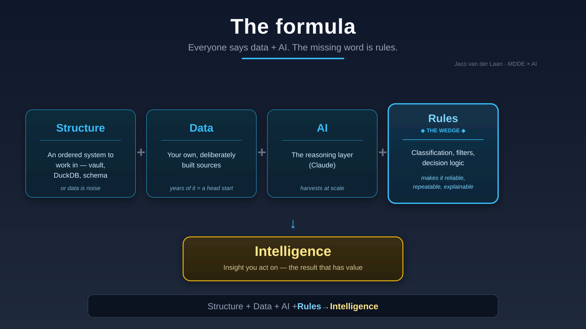
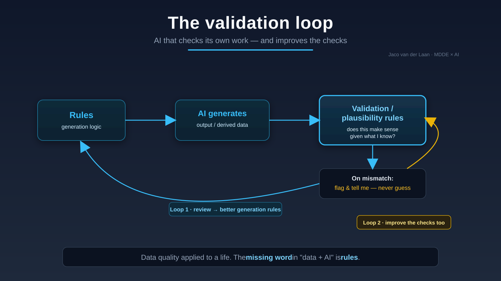

The approach
I bring twenty-five years of data architecture to the new AI layer. The method is the same one that makes enterprise data trustworthy — pointed at a new target.
An ordered system to work in — a connected knowledge base, a warehouse, real schema. Without structure, data is noise and AI is loose sand.
Your own, deliberately built sources. The raw material. Years of it is a head start no model gives you.
The reasoning layer. It makes the harvest possible at scale — but it's the same model everyone else has.
Classification, validation, decision logic. The method layer that makes AI reliable, repeatable and explainable. This is what most people skip — and it's the discipline I've spent a career on.

The part nobody else builds
Rules generate output. Validation and plausibility rules check that output against what's already known. On a mismatch, the system flags it — it never guesses.
And the loop closes twice: the generation rules get better, and the validation rules themselves get derived, reviewed, and improved. A system that audits its own output and sharpens its own audit. In enterprise data we call this a data quality layer. Almost nobody applies it to AI output. That's exactly why it's worth doing.

Proof in the life
My own work and life run on this architecture: structured sources, a rules engine, validation checks, a one-way publishing layer, and AI wired in through typed, governed access.
It's not a diagram I drew for a pitch — it's the system I use every day. The strongest demonstration of an approach is someone who has already applied it to their own life. When I help a team build their foundation, I'm not theorising. I'm transferring something that already works.
Where two disciplines converge
For years I've structured knowledge the way good personal knowledge management teaches — markdown notes, linked thinking, a connected vault in Obsidian. It was a craft I practised for clarity, not for AI.
Then the AI phase arrived, and those same markdown files became the place where information is structured for the model. The vault that organised my thinking is now the context Claude reasons over. Two disciplines I built separately — data architecture and personal knowledge management — converge on the same truth: structure is what makes intelligence reliable.
Data architecture gave me rules, validation and governance at enterprise scale. PKM gave me linked, markdown-native, human-readable structure. AI needs both — and most people have neither. That convergence is where I work.
Structure carries the context. The rest follows.
Start a conversation